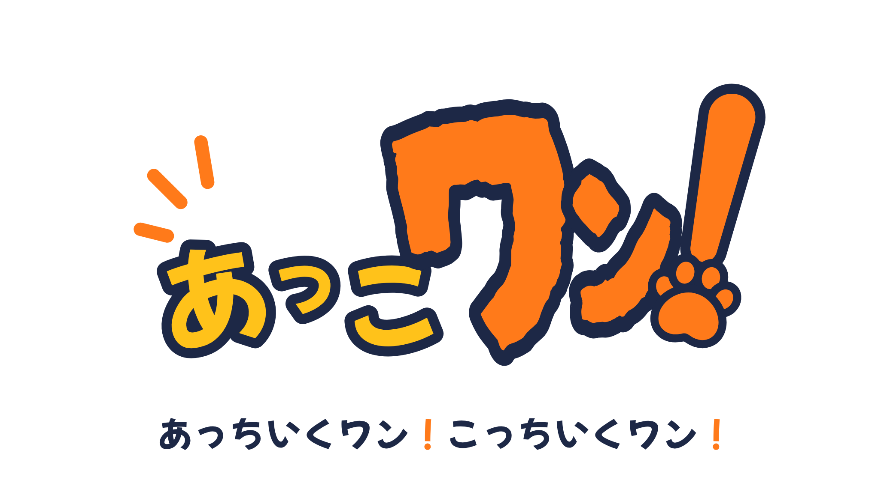

ボタンひとつで記録
お散歩に出るときに「開始」、帰ってきたら「終了」。そのあいだのルートを記録します。
あっこワン！は、愛犬とのお散歩ルートを記録して、家族と共有できるアプリです。
「今日はもう行った？」「どこまで歩いた？」が、ひと目でわかります。

むずかしい設定はなし。ボタンを押して歩くだけ。
お散歩に出るときに「開始」、帰ってきたら「終了」。そのあいだのルートを記録します。
歩いた道は地図で見返せます。お散歩の記録が、愛犬との思い出になります。
家族のだれがいつお散歩に行ったか、離れていてもわかります。「行った・行ってない」の行き違いも減らせます。
あっこワン！が共有するのは「愛犬とのお散歩」だけです。
プライバシーポリシーは準備中です。
公開にあわせて画面イメージを掲載します。
お散歩中の愛犬の気持ちになってみると…
あっちへ行きたい、こっちも気になる。
そんな毎日のお散歩を、家族みんなで見守れるように。